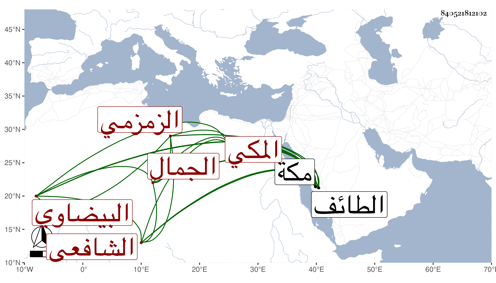

0902Sakhawi.DawLamic.ITO20230111-ara1.EIS1600.840521812102
Biography ID: 840521812102
759
محمد بن أبي الفتح بن إسمعيل بن علي بن محمد بن داود الجمال البيضاوي الأصل المكي الزمزمي الشافعي الآتي أبوه والماضي أخوه أحمد . ولد سنة أربع وأربعين وثمانمائة بمكة وحفظ المنهاج الملحة وألفية النحو ، وعرض على أبي السعادات بن ظهيرة وغيره وقرأ الصحيح على عم والده إبرهيم وأخذ عنه في العربية والفرائض والفلك ولازمه في غيرها وكذا أخذ الفلك عن ابن عمه نور الدين بل لازم الجوجري وإمام الكاملية في مجاورتيهما في الفقه وغيره وسمع قبلها من أبي الفتح المراغي وغيره ، وسافر الطائف وباشر الأذان بمكة وتوجه للزيارة غير مرة آخرها في أثناء سنة ثمان وتسعين فتعلل هناك وكان يحضر مع الجماعة عندي وهو متوعك ، ثم عاد فلم يلبث أن مات في شوال منها رحمه الله وإيانا .
